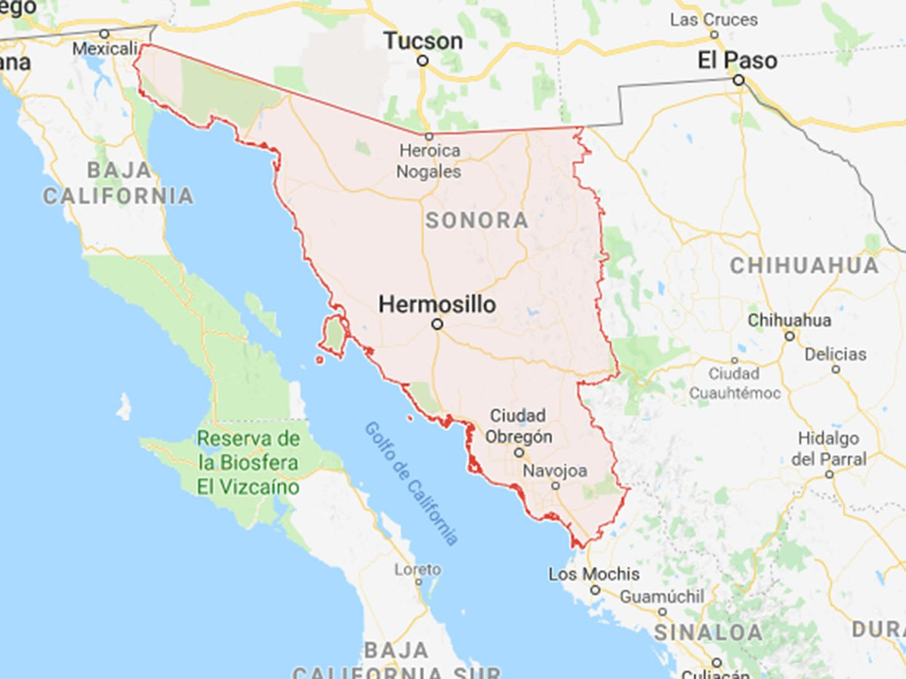
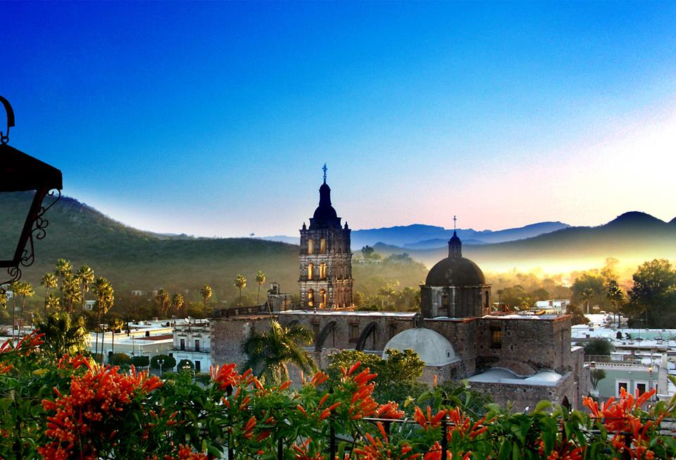

Estado soberano de Sonora.
Es uno de los treinta y un estados que, junto con la Ciudad de México, conforman México.78 Su capital y ciudad más poblada es Hermosillo. Está ubicado en la región noroeste del país, limitando al norte con Arizona (Estados Unidos), este con Chihuahua, al sur con Sinaloa y al oeste con el mar de Cortés o golfo de California (océano Pacífico) y con Baja California. Con 179 503 km² es el segundo estado más extenso —por detrás de Chihuahua— y con 14,83 hab/km², el quinto menos densamente poblado, por detrás de Campeche, Chihuahua, Durango y Baja California Sur. Fue fundado el 10 de enero de 1824.
El territorio está conformado por cuatro provincias fisiográficas: la Sierra Madre Occidental, las Sierras y Valles Paralelos en el centro, el desierto y la costa del golfo de California. Está compuesto principalmente por desiertos semiáridos y praderas, en donde solo en las elevaciones más altas se presenta suficiente lluvia para sostener otros tipos de vegetación.
Es hogar de ocho pueblos indígenas, entre ellos los mayos, los yaquis y los seris. Ha sido económicamente importante por su agricultura, su ganadería (en especial de res) y su minería desde el periodo colonial, y por su situación como estado fronterizo desde la Invasión estadounidense en México. Después de la venta de La Mesilla, Sonora perdió más de un cuarto de su territorio. Desde el siglo XX hasta el presente, la industria, el turismo y los agronegocios han dominado la economía, lo que ha atraído migración de otras partes de México. Se divide en 72 municipios. Su capital es Hermosillo. Otras localidades importantes son Ciudad Obregón, Navojoa, Caborca, Guaymas, Huatabampo, Puerto Peñasco, Nogales, Agua Prieta, San Luis Río Colorado, Nacozari de García y Cananea.
El estado de Sonora es grande en su extensión, en sus bellezas naturales, en sus riquezas históricas, en sus valores culturales, en sus atractivos turísticos y grande también, en el valor y corazón de su gente.
Es un hermoso estado que cuenta con mar y desierto, playas y montañas, grandes ciudades y pueblos mágicos, modernidad y tradiciones, ecosistemas únicos y sitios de aventura.
Puerto Peñasco, Hermosillo, Álamos, Magdalena de Kino, el Mar de Cortés, el desierto de Altar, El Pinacate, San Carlos, son algunos de sus asombrosos tesoros.
Sonora, histórica y moderna, tiene la infraestructura necesaria para ofrecer comunicaciones, servicios, hospedaje, alimentos, guía en las mejores condiciones a sus visitantes, a quienes recibe con la calidez de su clima y de su hospitalidad.
